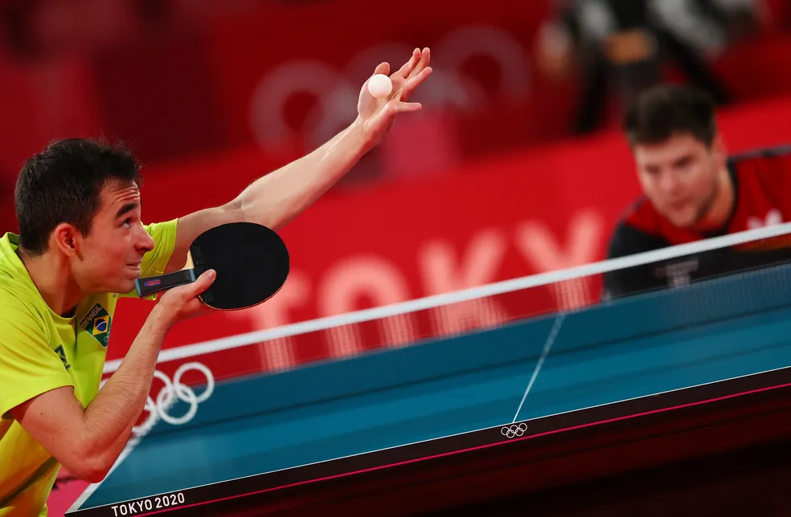
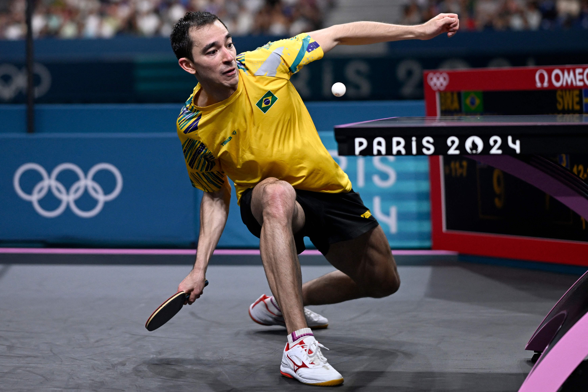
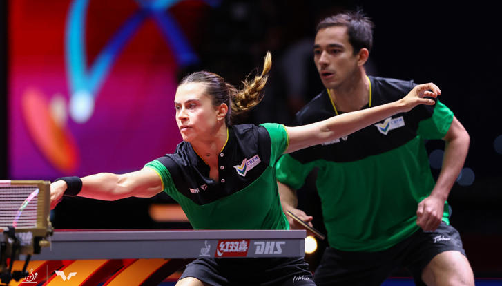

PRINCIPAIS REGRAS DO TÊNIS DE MESA

O saque é um dos fundamentos mais importantes do tênis de mesa e possui regras específicas para garantir justiça durante a partida.
Quando a bola toca na rede durante o saque e ainda cai corretamente na mesa adversária, o saque deve ser repetido. Isso é chamado de “let”.


O objetivo do jogo é marcar pontos fazendo com que o adversário não consiga devolver a bola corretamente.
Os jogadores trocam de lado após cada set para manter a igualdade da partida.
REGRAS EM JOGOS DE DUPLA


O jogo em duplas no tênis de mesa segue praticamente as mesmas regras do jogo individual, porém possui algumas regras específicas para organizar as jogadas entre os parceiros.
Durante o rally, os jogadores da dupla precisam rebater a bola de forma alternada.
No jogo em duplas, o saque obrigatoriamente deve ser feito na diagonal.
No início de cada set, é definida uma ordem de saque e recepção entre os jogadores.
As duplas trocam de lado após cada set.
A comunicação entre os jogadores é muito importante no jogo em duplas.
Antes do saque, os jogadores também podem combinar algumas estratégias para dificultar a devolução adversária.
O jogo em duplas costuma ser mais rápido e dinâmico que o individual, exigindo reflexo rápido, coordenação e trabalho em equipe.